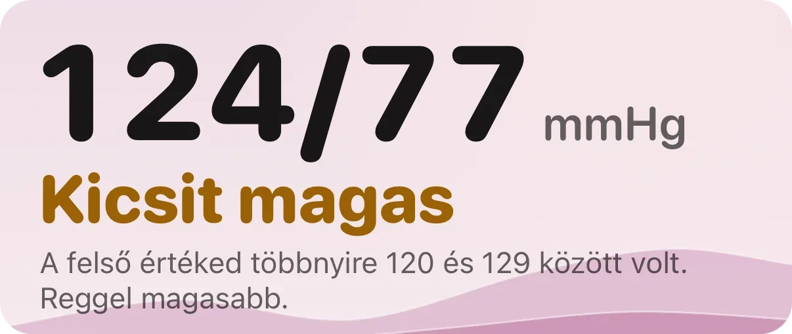
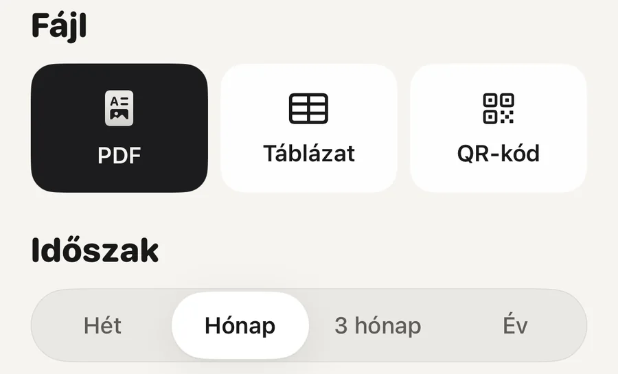

A gyakorlatban · Szív

Hét napon át mérj reggel kétszer és este kétszer, aztán vedd az átlagot. Ezt kérik az európai és az amerikai irányelvek az orvosi vizsgálat előtt. Előtte ülj öt percet nyugodtan, használj validált felkaros mérőt, és tarts meg minden mérést, ne csak a jókat. Otthon a magas vérnyomás határa 135/85, alacsonyabb, mint a rendelői 140/90.
A rend az európai és az amerikai ajánlásokban szinte ugyanaz (Stergiou és munkatársai, 2021; Shimbo és munkatársai, 2020):
Az apró hibák összeadódnak. A beszéd, a teli hólyag, a keresztbe tett láb vagy a megtámasztatlan kar egyenként is több ponttal megemelheti a mért értéket (Muntner és munkatársai, 2019).
Hét napig, de legalább háromig. Reggel és este két-két méréssel ez legfeljebb 28 mérés. Az orvosod ezek átlagára kíváncsi, nem a legjobbra és nem a legrosszabbra. Egyes irányelvek az első napot kihagyják, mert az első napi mérések általában magasabbak (Stergiou és munkatársai, 2021).
Az ok egyszerű: az egyes mérések ugrálnak. Két, néhány perc különbséggel vett mérés gyakran eltér úgy is, hogy semmi baj nincs, egy hét átlaga viszont sokkal stabilabb bármelyiküknél.
Az orvosod a hét átlagára kíváncsi, nem a legjobb mérésedre.
Nem kell örökké minden nap mérned. Egy teljes hét az orvosi vizsgálat előtt, ez számít. Két vizsgálat között a legtöbb embernek elég egy-egy alkalmi ellenőrzés, és az orvosod megmondja, milyen gyakran.
A felső érték a nyomás, amikor a szíved összehúzódik, az alsó érték a nyomás két szívverés között. Mindkettő higanymilliméterben van megadva, a jele mmHg (magyarul gyakran Hgmm).
Európában a magas vérnyomás otthoni határa a 135/85-ös vagy annál magasabb átlag, a rendelői határ pedig 140/90 (Stergiou és munkatársai, 2021). A 2025-ös amerikai irányelv alacsonyabb címkéket használ: a 120–129-es felső érték 80 alatti alsóval emelkedett, 130/80-tól 1. fokozatú, 140/90-től pedig 2. fokozatú magas vérnyomás (Jones és munkatársai, 2025). A 120/80 alatti érték mindkettő szerint normális.
Az otthoni határok egy képen
Egyetlen mérés egy magasabb sorban még nem jelent semmit. Az átlag számít. Azt pedig, hogy magas-e a vérnyomásod, és mi a teendő, csak orvos tudja megmondani.
A rendelőben sokan feszültebbek. A vérnyomás-szakrendeléseken megforduló emberek közül nagyjából minden ötödiknél csak a rendelőben magas az érték, és nagyjából minden hetediknél csak otthon (Stergiou és munkatársai, 2021). Egyik szám sem hibás. Az orvosod mindkettőt használja.
Az otthoni mérések legalább olyan szorosan követik a szívkockázatot, mint a rendelőiek. Nyolc vizsgálat 17 698 résztvevőjének összesített elemzése szerint az otthoni vérnyomás előre jelezte a szívinfarktust, a stroke-ot és a halálozást, és ez akkor is megmaradt, amikor a rendelői méréseket is figyelembe vették (Ward és munkatársai, 2012). Ezért érdemes egy tiszta hétnyi otthoni mérést magaddal vinni.
Automata felkaros mérőt, amely átment egy független pontossági vizsgálaton. Ezekre a vizsgálatokra egységes szabvány van (Stergiou és munkatársai, 2018), a megfelelt készülékek listája pedig ingyen olvasható a stridebp.org és a validatebp.org oldalon. Sok kapható mérőt soha nem vizsgáltak így, ezért vásárlás előtt nézz meg egy listát.
A csuklós mérők érzékenyebbek arra, hogyan tartod a karodat, és nem az első választás. A mandzsetta nélküli órák és gyűrűk ilyen naplóhoz nem használhatók.
Az Apple Watch nem mér vérnyomást. A hipertóniával kapcsolatos értesítései külön funkciót jelentenek, és nem helyettesítik a mandzsettát.
A mérések kétféleképpen kerülhetnek az Apple Health-be. A Bluetooth-os mérő a saját alkalmazásán keresztül minden mérést elment. Vagy te írod be: nyisd meg az Egészség alkalmazást, koppints a Böngészés, majd a Szív, aztán a Vérnyomás elemre, végül a Mérés hozzáadása gombra.
Az Egészség alkalmazásnak saját Vérnyomásnaplója is van. A Szív alatt, a Vérnyomásnapló résznél koppints az Első lépések gombra, válaszd a hét napig tartó reggeli és esti mérést vagy a négy hétig tartó napi mérést, és az iPhone szól, amikor ideje mérni. A végén az Exportálás PDF-ként gombbal mentheted. iPhone 11 vagy újabb kell hozzá a legfrissebb iOS-szel és egy vérnyomásmérő, és sokaknak ennyi bőven elég.
Bármit használsz, magát a naplót vidd el, ne az emlékeidet róla. A kilógó méréseket hagyd benne, és írd melléjük, ha valami szokatlan volt, például kávé, rövid éjszaka vagy kimaradt gyógyszer.

Jelentés az orvosodnakVálaszd ki az időszakot és a fájlt: nyomtatható vagy elküldhető PDF, táblázat, vagy QR-kód, amit az orvosod beolvashat. A QR-kód rövid szöveges összefoglalót tartalmaz, a jelentés pedig nem töltődik fel sehová.
Az Aera, iPhone-ra és Apple Watch-ra
Az Aera azokat a vérnyomásméréseket olvassa, amelyeket a mérőd az Apple Health-be ment, vagy amelyeket te írsz be az Egészség alkalmazásba. Az Aerába nem kell méréseket beírnod. Az utolsó hét olyan napod átlagát veszi, amelyen volt mérés, és ezt az otthoni határok szerint négy egyszerű szó egyikével írja le: Tartományban, Kicsit magas, Magas vagy Nagyon magas. A szó akkor jelenik meg, ha már három napon van mérésed. Addig a képernyő azt írja, hogy még tanul.
A szám alatt egy mondat megmondja, a két érték közül melyik miatt kerülsz oda, és hogy reggel vagy este magasabb-e. Egy mérést megjelölhetsz azzal, ami éppen történt, például kávé vagy rövid éjszaka. Az orvosodnak szánt jelentés PDF-ként, táblázatként vagy QR-kódként készül, egy hétre, egy hónapra, három hónapra vagy egy évre.
Az Apple Egészség alkalmazása is tud naplót vezetni és PDF-et exportálni. Az Aera ehhez hozzáadja az egyszerű szavakat, a reggelek és az esték összevetését, a jelöléseket, a táblázatot és a QR-kódot, és az egész magyarul van. Nincs fiók. A legfeljebb egy hónapos jelentés ingyenes, a három hónapos és az éves a Premium része.
Az Aera nem orvostechnikai eszköz, és nem állít fel diagnózist. Azt, hogy magas-e a vérnyomásod, csak orvos tudja megmondani.
Hét napig, reggel és este két-két méréssel, egy perc különbséggel. Három nap a legkevesebb, ami számít. Az orvosod az összes mérés átlagát nézi, és egyes irányelvek az első napot kihagyják.
A 120/80 alatti érték normális. Európában a magas vérnyomás otthoni határa a 135/85-ös vagy annál magasabb átlag, ami alacsonyabb a rendelői 140/90-nél. Az amerikai irányelv szerint 130/80-tól 1. fokozatú, 140/90-től 2. fokozatú a magas vérnyomás. A hét átlaga számít, nem egyetlen mérés.
Nem. Az Apple Watch nem mér vérnyomást, és a hipertóniával kapcsolatos értesítései nem helyettesítik a mandzsettát. A naplóhoz felkaros mérő kell, lehetőleg validált listáról. A Bluetooth-os mérő az Apple Health-be mentheti a méréseit.
Az Egészség alkalmazás Vérnyomásnaplójában a mérési időszak végén az Exportálás PDF-ként gombbal. Az Apple Health-et olvasó alkalmazások is tudják. Az Aera a méréseidből PDF-ként, táblázatként vagy QR-kódként készít jelentést.
Kapcsolódó jegyzet (angolul): mit nem tud mérni egy okosóra
Kapcsolódó útmutatók: Mennyi a normális nyugalmi pulzus? · Apple Watch HRV: mennyi a normális? · Mit jelent a biológiai életkor, amit az órád mutat? · Az Apple Watch magas vérnyomásra utaló jelet lát. Mi a teendő?